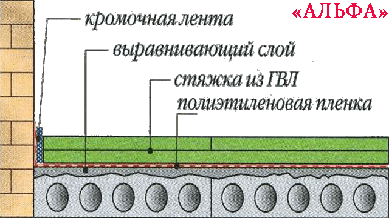
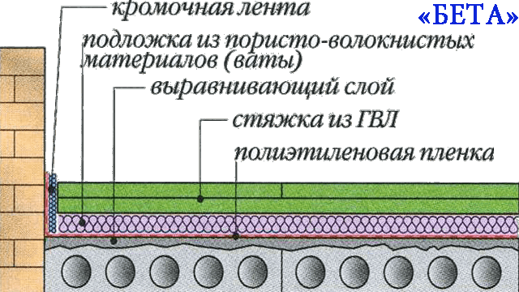
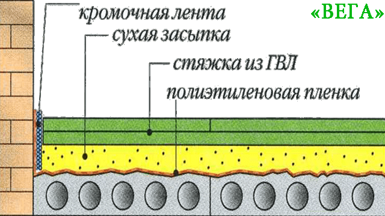
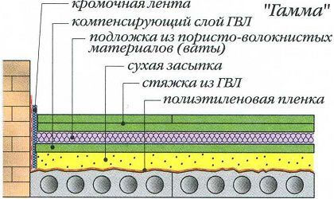
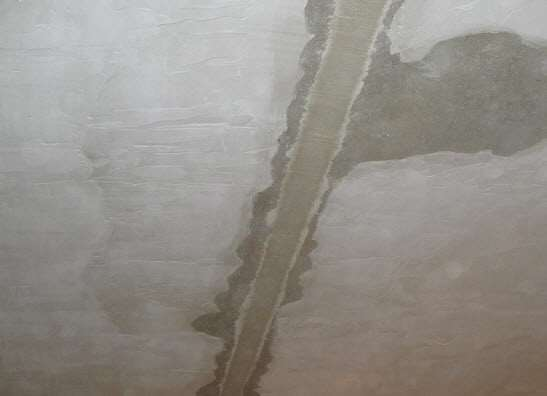
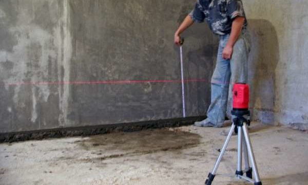
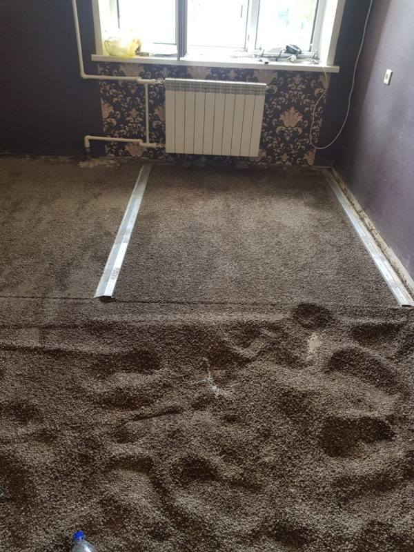
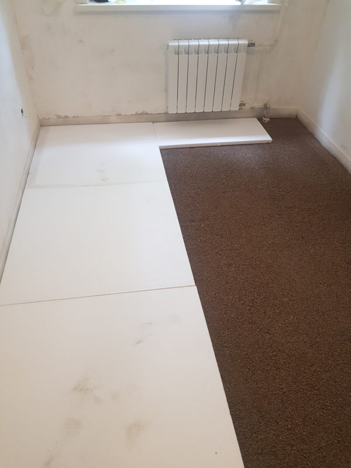
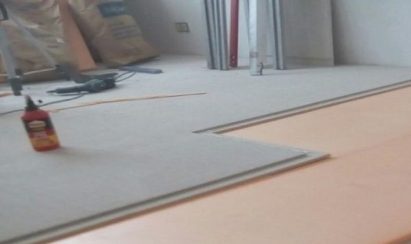
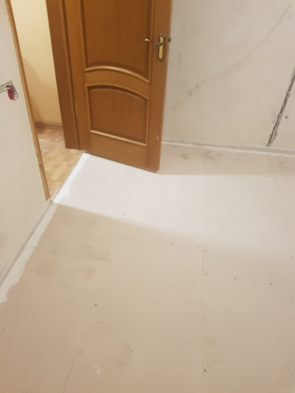

Технологии
Как мы создаем идеальный пол по технологии сухой сборной стяжки Knauf
Конструкции сухой стяжки Knauf
Четыре варианта «пирога» для разных задач
Для идеально ровных плит
Монтируется на идеально ровные плиты перекрытия, предварительно выровненные с помощью наливного пола. Элементы пола укладываются поверх наливного пола без использования сухой засыпки.

Альфа + звукоизоляция
Система укладки пола и подготовки основания такая же, как и в варианте Альфа, но под ГВЛ монтируют звукопоглощающий материал.

Для неровных оснований
Основание выравнивается с помощью керамзитного песка (сухой засыпки мелкой фракции 0-5 мм). Поверх выровненной сухой засыпки укладываются элементы пола Кнауф.

Самый теплый и тихий вариант
На выровненный слой засыпки монтируется звуко-теплоизоляция из вспененных материалов (полистиролов). Поверх укладываются элементы пола Кнауф, с соблюдением необходимой разбежки швов.

На практике в Самаре первые 2 варианта почти не используются. 3-й вариант (Вега) подходит для наших домов с оговоркой про доп. слой жесткости. 4-й вариант (Гамма) — самый предпочтительный для наших условий.
Сравнительная таблица технологий
Технические характеристики конструкций сухой стяжки
| Технология суперпола | Кол-во слоев | Толщина (см) | R (дБа) | L (дБа) | Нагрузка (кг/м²) |
|---|---|---|---|---|---|
| Альфа | 1 (эл.пола) | 2 | 52 | 60 | 24 |
| Бета | 2 ГВЛ + пористый звукоизолятор | 3-5 | 53 | 55 | 28 |
| Вега | 1 эл.пола + керамзит | 4-10 | 53 | 58 | 36-72 |
| Гамма | 1 эл.пола + полистирол + керамзит | 6-22 | 55-59 | 55-51 | 37-80 |
Важно! Сухая стяжка Кнауф — это плавающая конструкция, поэтому для любого из перечисленных вариантов демпферная лента по периметру стен в узлах примыкания обязательна.
Технология укладки сухой стяжки Кнауф
6 шагов к идеальному полу
Подготовка основания
Очищаем плиты перекрытия от мусора, шлама, камней. Осматриваем плиты на предмет дефектов. Заделываем штукатурной смесью трещины, щели, дыры в плитах и в местах примыкания.

Задаем горизонтальный уровень
Устанавливаем лазерный нивелир. На произвольной высоте размечаем единую черту во всех помещениях. Находим самую верхнюю точку. По периметру стен прокладываем демпферную ленту (выше отметки пола минимум на 2 см).

Выравниваем керамзитным песком
Высыпаем сухую засыпку из мешков. Устанавливаем маяки (рейки) на необходимый уровень. Производим финишное выравнивание правилом. Переставляем маяки, повторяем по всей площади.

Укладка звуко-теплоизоляции
Вспененный материал (полистирол) укладываем поверх выровненного слоя засыпки. Соблюдаем разбежку поперечных швов не менее 20 см. Для хождения используем «островки» из кусков ГВЛ 50х50 см.

Монтаж элементов пола Knauf
Первый лист монтируем в угол комнаты (фальцы у стен срезаем). Последующие элементы стыкуем фальцевыми соединениями с клеем. Фиксируем саморезами по ГВЛ с шагом не более 30 см.

Финишная обработка
Промазываем гипсовой штукатуркой технологические зазоры по периметру. Затираем швы и шляпки саморезов финишной шпаклевкой (для мягких покрытий). При повышенной влажности — гидроизоляция в 2 слоя.

На этом монтаж сухой стяжки Knauf завершен. Осталось постелить чистовое напольное покрытие и наслаждаться тишиной и уютом в вашем доме долгие годы.
НУЖНА КОНСУЛЬТАЦИЯ?
Рассчитаем стоимость материалов и работ по технологии Knauf